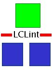

LCLint Version 1.3
This is a release notice for an obsolete version of LCLint. It is
included for archival purposes only.
Date: Tue, 19 Jul 94
LCLint Version 1.3 now available from MIT by anonymous ftp.
LCLint is a lint-like tool for ANSI C. It can be used like a traditional
lint to detect certain classes of C errors statically; if formal
specifications are also supplied, it can do more powerful checking to
detect inconsistencies between specifications and code.
Without specifications, LCLint does many of the checks done by a
traditional lint. It reports unused declarations, type inconsistencies,
use-before-definition, unreachable code, ignored return values, execution
paths with no return, likely infinite loops, and fall-through cases. It
provides options for stricter type-checking than standard C (e.g., char and
bool types can be treated as distinct from ints.).
With partial specifications, written in the Larch interface language,
LCL, LCLint does stronger checking. For example, a one-line specification
file can declare a type as abstract; LCLint checks that the data
abstraction barrier is maintained in clients of the type. This provides
the advantages of data encapsulation, making programs easier to understand
and maintain.
Adding more specifications enables further checking, including the
detection of:
o inconsistent use of global variables
o undocumented modification of client-visible state
o inconsistent use of an uninitialized formal parameter or
failure to initialize an actual parameter
o macros specified as functions do not behave functionally
LCLint can be customized to a particular coding style using command line
flags. Stylized comments may be used to suppress messages and control
checking at a local level.
LCLint is available by anonymous ftp to larch.lcs.mit.edu in pub/Larch/.
The installation package for is lclint1.3..tar.Z.
Uncompress and `tar xf' this file, and look at INSTALL for further
directions.
Installation pacakages are available for the following platforms:
o DEC Alpha AXP running OSF/1 --- lclint1.3.alpha.tar.Z
o DECstation running Ultrix --- lclint1.3.decmips.tar.Z
o Sun workstation (Sparc) running Solaris --- lclint1.3.solaris.tar.Z
If you would like to use LCLint on some other platform, send mail to
evans@cs.virginia.edu and we will provide instructions and C source code
for building LCLint.
Each installation package includes the lclint executable, library files,
manual pages, user's guide, an emacs mode, and a few samples.
More information on LCLint is available in "Using Specifications to
Check Source Code", David Evans, MIT/LCS/TR-628. Available as
ftp://larch.lcs.mit.edu/pub/evs/lclint-tr.ps.Z.
A web page on the Larch project is available at URL
http://larch-www.lcs.mit.edu:8001/larch/
A web page for LCLint specifically, including an html version of the
User's Guide, is available at URL
http://www.sds.lcs.mit.edu/lclint.html
LCLint is the result of a joint R&D project (Larch) involving Digital
Equipment Corporation and MIT. It was written in ANSI C by David Evans,
building on an LCL checker written by Yang Meng Tan, which in turn built
on work done by Gary Feldman, Steve Garland, and Joe Wild. Chris
Flatters produced the Solaris port.

David
Evans
University of Virginia, Computer Science
evans@cs.virginia.edu